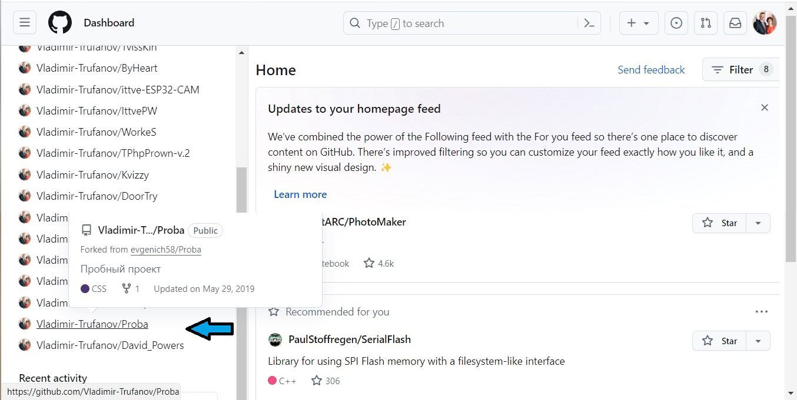

Заходим в аккаунт и выбираем репозитарий который хотим удалить, например "Proba":

Заходим в репозитарий, кликнув на названии репозитария.
Выбираем в верхней строке меню кнопку "Settings" и щелкаем по ней.
Открывается страница настроек.
Перемещаемся по странице вниз и находим таблицу "Danger Zone".
У кнопки "Delete this repository", которую нам предстоит нажать, GitHub предупреждает:
Delete this repository
Once you delete a repository, there is no going back. Please be certain.
- - - - - - - - - - - - - - - - - - - - - - - - - - - - - - - - - - - - -
Удалить этот репозитарий
После удаления репозитария пути назад уже не будет. Пожалуйста, определитесь.Хорошо подумав, нажимаем кнопку "Delete this repository". После чего потребуется еще три раза подтвердить свое желание:
И, напоследок, вводя пароль, подтверждаем работу в своем аккаунте.